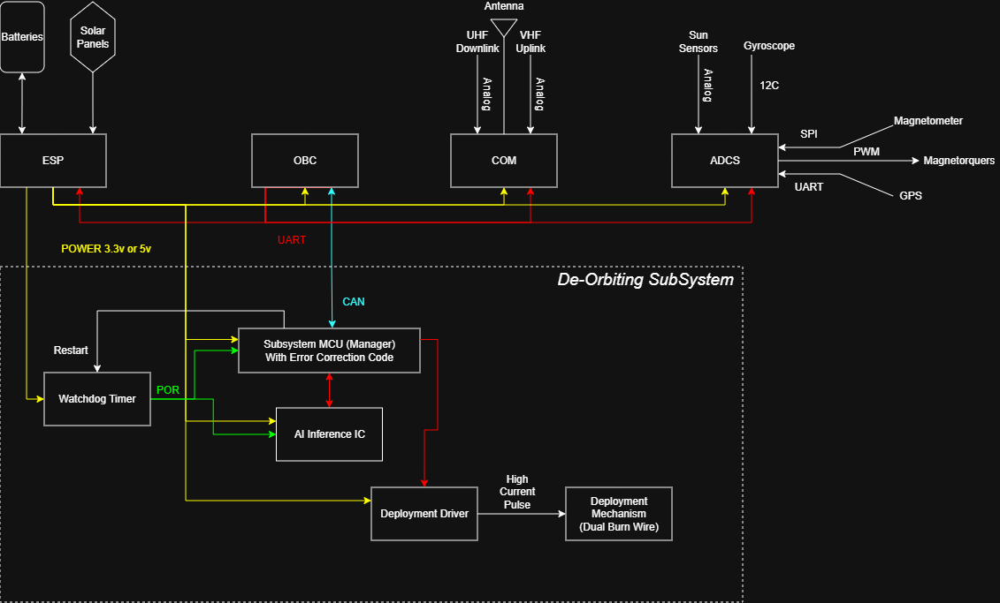

Smart Drag-Sail
Deorbit System
An AI-optimised drag sail with onboard inference: ground-trained Gaussian Process forecaster + flight-side decision policy distilled to under 1 KB of C — making every CubeSat mission ESA-compliant, propellant-free, and robust to solar-cycle uncertainty.
Loading GP forecast and onboard policy…
Mission concept
The problem
A 6U CubeSat at 600 km SSO takes decades to naturally deorbit — creating a collision hazard and violating ESA's 5-year Zero Debris rule (ESSB-ST-U-007 §SDM-50). Traditional propulsion adds cost, mass, and failure modes.
The solution
An integrated drag sail (… m², ≈…× stowed area) deploys end-of-mission. An onboard AI Inference IC, fed by a ground-trained policy, picks the optimal deployment moment — cutting post-EOM lifetime to … years with zero propellant.
Why ML-timed deployment is novel
- NanoSail-D2, InflateSail, CanX-7, ADEO-N: all flown with fixed timer or ground command
- None used onboard inference to time deployment
- F10.7 swings ~10× across the solar cycle — material density variation
- Probabilistic forecast → robust policy → ≤1 KB C inference on the IC
Compliance framework
- ESA ESSB-ST-U-007 Issue 1, Req. SDM-50 — 5-yr post-mission disposal
- FCC 22-74 (Sept 2022) — parallel 5-yr US rule
- IADC Space Debris Mitigation Guidelines (Rev. 2)
- ISO 24113:2019 Space Debris Mitigation Requirements
- No fuel → no explosion/fragmentation risk
Mission lifecycle
Five-phase lifecycle from initial design through propellant-free reentry. The AI sail-deployment decision sits at phase 4, after 3 years of operational mission. The onboard model was distilled from the ground-segment Gaussian Process optimizer pre-launch.
EO payload
ADEO-class sail
AI IC + watchdog
IADC review
LEOP checkout
Comms verified
TLE registered
Sail stowed
F10.7 ingest via uplink
Onboard policy active
TLE monitoring
Conjunction watch
DEPLOY signal
MCU fires burn wire
Sail unfurls
Drag area ×…
Aerobraking
Demise / burn
Zero debris
✓ ESA 5-yr rule
AI deployment decision logic (onboard)
The Subsystem MCU polls the AI Inference IC each orbit. The IC runs a depth-5 decision tree (5 inputs, ≤1 KB C code) distilled offline from a 30-sample Gaussian Process forecast and a robust optimization sweep over a ±6-month flexibility window. Inputs: mission_day, F10.7_now, F10.7_slope_30d, altitude_km, days_since_eom. Output: WAIT or DEPLOY. Inference time: microseconds on a Cortex-M4-class part. See the Hardware tab for the full block diagram and the actual generated C source.
Orbital decay simulation
Five scenarios from the Python simulator using a Vallado piecewise-exponential atmosphere with F10.7 modulation calibrated to NRLMSIS-2.1 published values. The AI strategies operate over a 6-month flexibility window post-EOM, scoring each candidate day across 30 GP forecast samples and choosing by expected score (robust), median forecast (point), or 95th-percentile worst case (risk-averse).
Simulation parameters
- Loading…
Solar weather leverage
- F10.7 index tracks solar 10.7-cm radio flux (UV proxy)
- 21 yr of NOAA SWPC monthly observations used to fit our GP
- GP kernel: Constant·ExpSineSquared(period≈11 yr) + RBF + WhiteKernel
- Density at 600 km: factor ~10× swing, F10.7 70 → 200 SFU
- NOAA 27-day forecast skill: ~10 SFU RMSE at 1 d, ~30 SFU at 27 d
3D Orbit Decay Race
Why this exists
The same satellite, three different deorbit strategies, racing the ESA 5-year compliance clock:
- ⬤ Grey — Baseline: no sail. Decays naturally over ~37 years. ESA-illegal.
- ⬤ Orange — Naive: sail deploys exactly at end-of-mission (day 1096). Decays in ~5 years post-EOM. Compliant, but no margin.
- ⬤ Green — AI robust: same hardware, but the onboard AI Inference IC picks the deploy day from a probabilistic solar forecast. Same compliance, with quantified worst-case bound.
Watch: for the first 3 years all three orbits look identical (operational mission). At year 3 the sails deploy — orange and green start spiraling down while grey stays high. Around year 8 orange and green hit reentry. Grey takes another 30 years.
Altitude is shown 5× exaggerated so 100–600 km differences are visible (real LEO orbits are razor-thin against Earth's surface). Drag the scene to rotate, scroll to zoom.
Time
Strategies (click to toggle)
Hardware Architecture

The De-Orbiting Subsystem (dashed boundary above) is isolated from the main bus by power and CAN-bus boundaries. The AI Inference IC runs a tiny distilled policy; the Subsystem MCU (with ECC memory) acts as the safety-rated manager. A Watchdog Timer guards against single-event upsets — standard practice for spacecraft autonomy per Furano et al. 2020 (IEEE A&E Systems Mag, doi:10.1109/MAES.2020.3008468), as flown on Phi-Sat-1, OPS-SAT-1, and CogniSAT-XE1.
Subsystem components
- Subsystem MCU (Manager) — ECC RAM, supervises the IC and arms the Deployment Driver. Communicates with OBC over CAN.
- AI Inference IC — runs the distilled deployment policy (decision tree, ≤1 KB C). Movidius Myriad 2 / Coral / Akida class.
- Watchdog Timer — POR + Restart on IC lock-up; mandatory for COTS parts in radiation environments.
- Deployment Driver — high-current burn-wire pulse output, electrically isolated from low-power logic.
- Deployment Mechanism — non-pyrotechnic burn wire releases the ADEO-class sail cassette.
Bus integration
- CAN bus → OBC — telemetry up, command authority retained on ground until autonomy is enabled.
- Power 3.3 V / 5 V from ESP — protected rail, fused at the subsystem boundary.
- F10.7 source — ground uplink (NOAA SWPC 27-day outlook) refreshed daily, with 27-day persistence as fallback.
- Altitude/state — from the GPS receiver via ADCS, forwarded to the IC each orbit.
Distilled flight policy (auto-generated C)
This C source was emitted by flight_policy.py via the m2cgen library, distilling the full ground-segment Gaussian Process + robust optimization pipeline into a single function. Cross-compile for the IC of choice. No runtime, no allocations, no dependencies — just a sequence of comparisons.
// Loading flight/policy.c …
KPIs & Compliance
| Scenario | Deploy day | Post-EOM (yr) | p95 worst-case | Band (yr) | 5-yr rule |
|---|---|---|---|---|---|
| Loading… | |||||
References
10 / 20 / 50-year impact
Widespread adoption of AI-timed drag sails would structurally shift how the 500–700 km orbital shell is managed.
ESA-compliant deorbit practices across the CubeSat sector could prevent several hundred dead satellites accumulating in the critical 500–700 km band. Regulatory momentum shifts: stricter rules follow the ESA Charter and FCC 22-74.
Onboard ML-timed sail deployment becomes a standard subsystem rather than a one-off experiment. Cycle-aware deployment quantifiably reduces post-EOM lifetime variance versus fixed-timer strategies.
Every satellite carries its own verified exit plan with quantified compliance margin. The critical density threshold for Kessler syndrome in the 600 km shell remains safely unbreached.
The AI edge — under uncertainty
F10.7 forecasts are inherently uncertain (NOAA SWPC: ~30 SFU RMSE at 27 days, climatology-bounded beyond 6 months). Our Gaussian Process gives calibrated uncertainty bands that feed a robust optimizer: instead of trusting a single forecast, we choose deployment days that minimize expected — or 95th-percentile worst-case — post-EOM lifetime. This converts forecast uncertainty into compliance margin, not into mission risk.